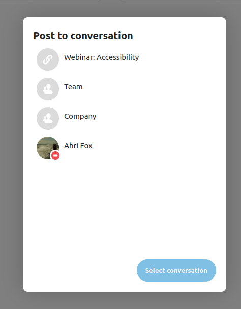
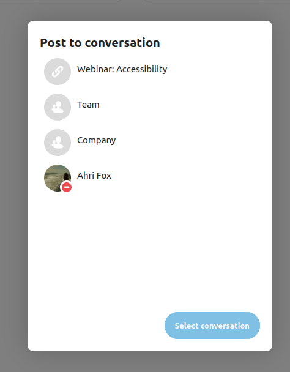

Advanced Talk features
Nextcloud Talk has a number of advanced features users might find useful.
Matterbridge
Matterbridge integration in Nextcloud Talk makes it possible to create ‘bridges’ between Talk conversations and conversations on other chat services like MS Teams, Discord, Matrix and others. You can find a list of supported protocols on the Matterbridge github page.
A moderator can add a Matterbridge connection in the chat conversation settings.

Each of the bridges has its own need in terms of configuration. Information for most is available on the Matterbridge wiki and can be accessed behind more information menu in the ... menu. You can also access the wiki directly.
Lobby
The lobby feature allows you to show guests a waiting screen until the call starts. This is ideal for webinars with external participants, for example.

You can choose to let the participants join the call at a specific time, or when you dismiss the lobby manually.
Commands
Nextcloud allows users to execute actions using commands. A command typically looks like:
/wiki airplanes
Administrators can configure, enable and disable commands. Users can use the help command to find out what commands are available.
/help

Find more information in the administrative documentation for Talk.
Talk from Files
In the Files app, you can chat about files in the sidebar, and even have a call while editing it. You first have to join the chat.


You can then chat or have a call with other participants, even when you start editing the file.

In Talk, a conversation will be created for the file. You can chat from there, or go back to the file using the ... menu in the top-right.

Create tasks from chat or share tasks in chat
If Deck is installed, you can use the ... menu of a chat message and turn the message into a Deck task.


From within Deck, you can share tasks into chat conversations.
 

Breakout rooms
Breakout rooms allow you to divide a Nextcloud Talk call into smaller groups for more focused discussions. The moderator of the call can create multiple breakout rooms and assign participants to each room.
Configure breakout rooms
To create breakout rooms, you need to be a moderator in a group conversation. Click on the top-bar menu and click on “Setup breakout rooms”.

A dialog will open where you can specify the number of rooms you want to create and the participants assignment method. Here you’ll be presented with 3 options:
Automatically assign participants: Talk will automatically assign participants to the rooms.
Manually assign participants: You’ll go through a participants editor where you can assign participants to rooms.
Allow participants choose: Participants will be able to join breakout rooms themselves.

Manage breakout rooms
Once the breakout rooms are created, you will be able to see them in the sidebar.

From the sidebar header
Start and stop the breakout rooms: this will move all the users in the parent conversation to their respective breakout rooms.
Broadcast a message to all the rooms: this will send a message to all the rooms at the same time.
Make changes to the assigned participants: this will open the participants editor where you can change which participans are assigned to which breakout room. From this dialog it’s also possible to delete the breakout rooms.

From the breakout room element in the sidebar, you can also join a particular breakout room or send a message to a specific room.